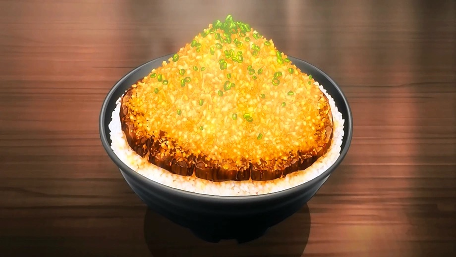

Chaliapin Steak Don

Chaliapin Steak Don is a dish made by Sōma Yukihira for his fisrt Shokugeki against Ikum Mito.
The Chaliapin Steak is an original Japanese steak. Originally made in 1936 for the Russian opera singer Feodor Chaliapin when he visited Japan.
Donburimeaning "bowl", is frequently abbreviated as "don". Donburi is a Japanese "rice bowl dish" consisting of meat, vegetables, or other ingedients cooked together and served over rice.
Ingredients
- Beef Sirloin
- Lots of Onion
- Garlic
- Pepper
- Salt
- Potato Starch
- Rice
- Umeboshi
Ingredients for the Sauce
- Red Wine
- Soy Sauce
- Butter
Directions for cooking the Steak
- chop onions finely.
- Beat the beef with a meat tenderizer until is is as flat as possible.
- Cover meat on both sides with the chopped onion and leave for 30 minutes or more. Remove the onion and add salt and pepper to both sides
- Cook the steak to your preference. Remove from heat and ass a tablespoon of butter to the pan and fry the same onion used for the beef until it is caramalized. Then move the onion to the steak.
- Melt the rest of the butter to the pan and fry both sides of the steak before taking it out.
Directions for Making the Sauce
- Add red wine to the frying pan used for the steak to deglaze it.
- Add soy sauce and mix with everything. Adjust seasonings to personal prefences.
- Thicken with dissolved potato starch.
Put rice mixed with the Umeboshi paste in the donburi bowl. Place the beef on top and add plenty of sauce. Top with finely chopped onions.